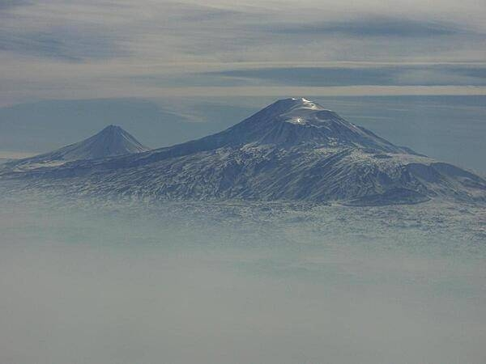

Introduction
Armenia prides itself on being the first nation to formally adopt Christianity (early 4th century).
During World War I in the western portion of Armenia, the Ottoman Empire instituted a policy of forced resettlement coupled with other harsh practices that resulted in at least 1 million Armenian deaths - actions widely recognized as constituting genocide.
Armenia remains involved in the protracted struggle with Azerbaijan over control of Nagorno-Karabakh, a primarily ethnic Armenian region that Moscow recognized in 1923 as an autonomous oblast within Soviet Azerbaijan.
Turkey closed the common border with Armenia in 1993 in support of Azerbaijan in its conflict with Armenia over control of Nagorno-Karabakh and surrounding areas, further hampering Armenian economic growth.
Geograpy
Location
Armenia is located in Southwestern Asia between Turkey (to the west) and Azerbaijan.
Geographic Coordinates
The geographic coordinates for the country of Armenia are 40 00 N, 45 00 E.
Land Use
| Type | Event (2018) |
|---|---|
| Agriculture Land | 59.7% |
| Forest | 9.1% |
| Other | 31.2% |
People and Society
Population
The current population of Armenia is 3,000,756 as of the year 2022.
Languages
97.9% of people in Armenia speak Armenian.
Population Distribution
The Armennian population is mostly located in the northern half of the country.
Yerevan, which is the capital of Armenia, is home to more than five times as many people as Gyumri.
Gyumri is the second largest city in Armenia.
Government
National Holiday
Armenia celebrates Independence Day on September 21 which was established in 1991.
Legal System
The country of Armenia uses a civil law system
Flag Description
The Armenian flag has three equal horizontal bands of red on top which are blue and orange.
- The color orange represents the land and the courage of the countries workers who farm it
- The color blue is to symbolize the Armenian skies as well as hope.
- The color red recalls the blood shed for libery.